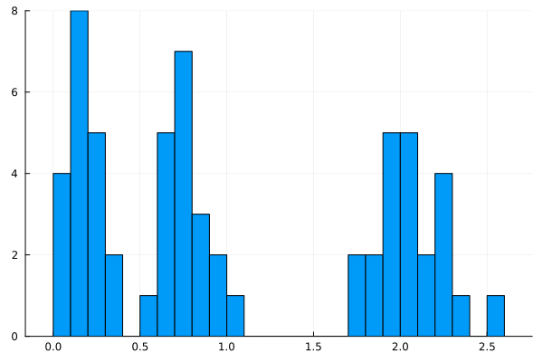
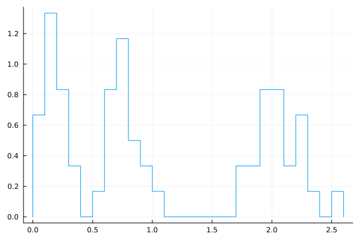
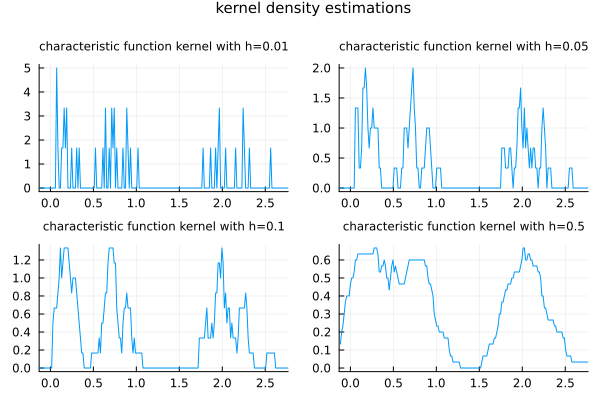
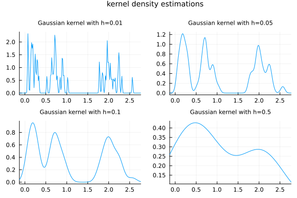
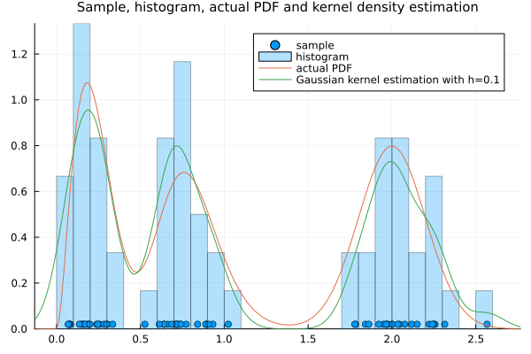

Kernel density estimation
We consider a univariate real-valued random variable $X$, for simplicity, but the same idea applies to multivariate random variables.
Let us say we have a sample $\{x_n\}_{n=1}^N$ of $X$, where $N\in\mathbb{N}$.
Which statistical informations one can draw from it?
Certainly we can compute the sample mean, and the sample standard deviation, directly from the data, and so on. They give us some reasonable estimates on the true values, depending on the number of sample points and on the independence of the sample.
We can also draw its histogram, to have a more visual information of the underlying distribution.

That histogram resembles a PDF. It is not a PDF in the sense that its mass is not one, but it can be normalized to resemble a PDF.
In view of that, one natural question is how well can we approximate the PDF from the data?
There are parametric ways to do that, which means we can assume a parametrized model, say a Beta distribution $B(\alpha, \beta)$ with shape parameters $\alpha$ and $\beta$, and fit the model to the data, say using maximum likelyhood estimation, and use the pdf of the fitted model. That's all good. Depending on the random variable, though, your model can become quite complex.
There are also nonparametric ways of obtaining an approximate PDF for the distribution. One popular choice is the kernel density estimation, also known as Parzen window estimation, developed by Murray Rosenblatt (1956), Peter Whittle (1958), and Emanuel Parzen (1962).
One way we can view the kernel density estimation is as a spin-off of the histogram. The PDF is likely to be larger where there are more sample points nearby. The closer they are to a point, the higher the chances around that. We can measure this with a kernel density around each sample point, like a region of influence. One can use different types of kernels, but a common one is a Gaussian kernel.
In the case of a histogram, if the interval $I_j$ represents a bin, then the corresponding height $h_j$ of the histogram on this bin is the sample count within the bin, which can be written as
\[ h_j = \sum_{n=1}^N \chi_{I_j}(x_n).\]
We can normalize this with
\[ p_j = \frac{1}{N|I_j|}\sum_{n=1}^N \chi_{I_j}(x_n),\]
where $|I_j|$ is the width (or length) of the interval $I_j$.
In this case, if we set $\hat p_{\mathcal{I}}(x) = p_j$ for $x\in I_i$, then
\[ \int_{\mathbb{R}} \hat p_{\mathcal{I}}(x) \;\mathrm{d}x = \sum_{j=1}^M p_j |I_j|,\]
where $M$ denotes the total number of bins, containing all the sample points and the partition $\mathcal{I} = \{I_j\}_{j=1}^M$ is the collection of bins. Then,
\[ \int_{\mathbb{R}} \hat p_{\mathcal{I}}(x) \;\mathrm{d}x = \sum_{j=1}^M \frac{1}{N|I_j|}\sum_{n=1}^N \chi_{I_j}(x_n)|I_j| = \frac{1}{N} \sum_{j=1}^M \sum_{n=1}^N \chi_{I_j}(x_n).\]
Switching the order of summation, we obtain
\[ \int_{\mathbb{R}} \hat p_{\mathcal{I}}(x) \;\mathrm{d}x = \frac{1}{N} \sum_{n=1}^N \sum_{j=1}^M \chi_{I_j}(x_n).\]
Since each sample point is in one and only one bin, we have that
\[ \sum_{j=1}^M \chi_{I_j}(x_n) = 1.\]
Thus,
\[ \int_{\mathbb{R}} \hat p_{\mathcal{I}}(x) \;\mathrm{d}x = \frac{1}{N} \sum_{n=1}^N 1 = \frac{N}{N} = 1,\]
showing that $\hat p_{\mathcal{I}}(\cdot)$ is normalized to have total mass $1$. So, this is a genuine PDF of some distribution that somehow approximates the true distribution. But it is not smooth.

The kernel window estimation can be seen as a variation of this, which regularizes the PDF, provided the kernel is smooth. In this estimation, instead of summing up characteristic functions of the bins, we sum up the kernel around each sample point:
\[ \hat p_h(x) = \frac{1}{h N}\sum_{n=1}^N K\left(\frac{x - x_n}{h}\right),\]
where $h$ is a scale parameter that plays the role of the width of the bin, for a nondimensional kernel.
If the kernel has mass $1$, so does $\hat p_h(x)$. Indeed, using the change of variables $y = (x - x_n) / h$,
\[ \begin{align*} \int_{\mathbb{R}} \hat p_h(x) \;\mathrm{d}x & = \frac{1}{h N}\sum_{n=1}^N \int_{\mathbb{R}} K\left(\frac{x - x_n}{h}\right) \;\mathrm{d}x \\ & = \frac{1}{h N}\sum_{n=1}^N \int_{\mathbb{R}} K(y) h \;\mathrm{d}y \\ & = \frac{1}{N} \sum_{n=1}^N \int_{\mathbb{R}} K(y) \;\mathrm{d}y \\ & = \frac{1}{N} \sum_{n=1}^N 1 = \frac{N}{N} = 1. \end{align*}\]
If the kernel is flat, say the characteristic function of the interval $[-1/2, 1/2)$,
\[ K(x) = \chi_{[-1/2, 1/2)}(x),\]
then the kernel window estimation $\hat p_h(x)$ is constant by parts, resembling a histogram, but not quite like a histogram since the characteristic function is not attached to bins, but are centered on each sample point.

When the kernel is smooth, so is $\hat p_h(x)$. In fact, $\hat p_h(x)$ is as regular as the kernel. One popular choice is the Gaussian kernel
\[ K(x) = \frac{1}{\sqrt{2\pi}} e^{-\frac{x^2}{2}}.\]
This yields the estimation
\[ \hat p_h(x) = \frac{1}{h N}\sum_{n=1}^N K\left(\frac{x - x_n}{h}\right) = \frac{1}{N}\sum_{n=1}^N \frac{1}{\sqrt{2\pi} h} e^{-\frac{1}{2}\left(\frac{x - x_n}{h}\right)^2}.\]

The sample in this example was drawn from a mixture model combining a Beta distribution, a Gamma distribution, and a normal distribution. Here is the actual PDF compared with Gaussian kernel estimation with a specific value of $h$.

The choice of a suitable value for $h$ is a delicate problem, though, as one can see from the estimations above, which is akin to the problem of choosing how many bins to view the histogram. And how can we be sure that this is really a good approximation for some "reasonable" choices of $h$?
Indeed, these are fundamental questions, and the works of Rosenblatt, Whittle, and Parzen are deeper than simply proposing the estimation $\bar p_h$ for some kernel function and some value $h$. They also discuss further conditions on the kernel such that the estimate is not biased, and discuss asymptotic properties of the estimation, as the number of sample points grows to infinity. One of the results is that the choice of $h$ should depend on $n$ and decay to zero as $n$ increases. They are worth reading, but we will not dwelve into further details at this moment.
References
- M. Rosenblatt (1956), Remarks on Some Nonparametric Estimates of a Density Function. The Annals of Mathematical Statistics 27, no. 3, 832–837, doi:10.1214/aoms/1177728190
- P. Whittle (1958), On the Smoothing of Probability Density Functions, Journal of the Royal Statistical Society. Series B (Methodological), Vol. 20, No. 2, pp. 334-343
- E. Parzen (1962), On Estimation of a Probability Density Function and Mode. The Annals of Mathematical Statistics 33, no. 3, 1065–1076, doi:10.1214/aoms/1177704472